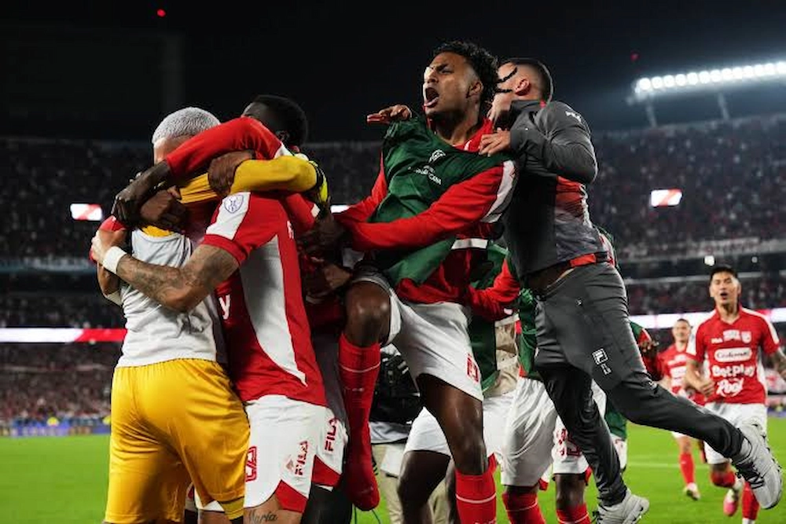

COPA SUDAMERICANA · RIVER PLATE V SANTA FE
Santa Fe hizo historia y eliminó a River Plate en el Monumental

En una noche que quedará grabada para siempre en la memoria cardenal, Independiente Santa Fe volvió a demostrar su casta de campeón y firmó una de las páginas más gloriosas de su historia continental: la eliminación de River Plate en su propio Monumental, sobreponiéndose al marcador adverso con carácter, temple y un cierre heroico desde el punto penal.
River Plate abrió el marcador a los 51 minutos por medio de Sebastián Driussi, quien conectó un remate al segundo palo tras un centro abierto de Gonzalo Montiel. Sin embargo, ese tanto, lejos de amilanar al León, fue apenas un obstáculo pasajero en el camino hacia la gloria.
Con la ventaja transitoria del local, River buscó ampliar la cuenta con remates de Thiago Almada y Marcos Acuña, pero encontró siempre a un Santa Fe ordenado, valiente y con la entereza de quien sabe que la historia se escribe con carácter, sin bajar nunca los brazos.

La justicia deportiva llegó a los 80 minutos: Luis Ángel Palacios remató dentro del área, la pelota tocó el brazo de Lucas Martínez Quarta y el árbitro Esteban Ostojich decretó penal. Franco Fagúndez, con la sangre fría de los grandes, no falló y puso el 1-1, premiando la insistencia y el temple con el que Santa Fe atacó durante todo el partido.
El empate desarmó a River y a su gente, que vio cómo el equipo bogotano crecía minuto a minuto pese a jugar en la casa del rival. El local intentó reaccionar con seis minutos de adición, pero no logró vulnerar la firmeza que Santa Fe mostró hasta el pitazo final.
La definición llegó desde el punto penal, el escenario perfecto para que Santa Fe demostrara una vez más su temple de equipo grande: se impuso 8-7 en una vibrante tanda de 22 lanzamientos. Weimar Asprilla, héroe indiscutido de la noche, atajó el remate decisivo de Facundo González y selló una clasificación histórica en pleno Monumental.